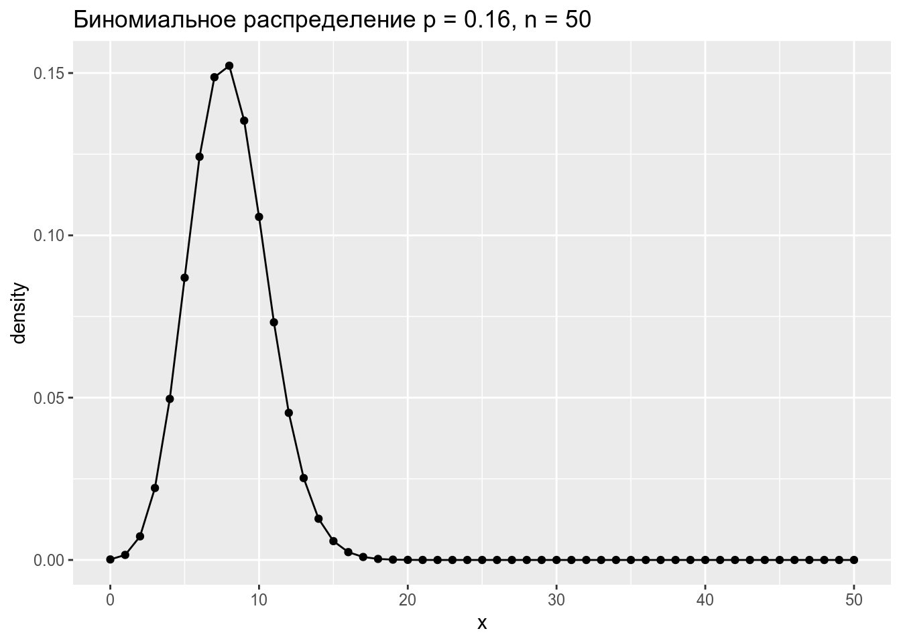
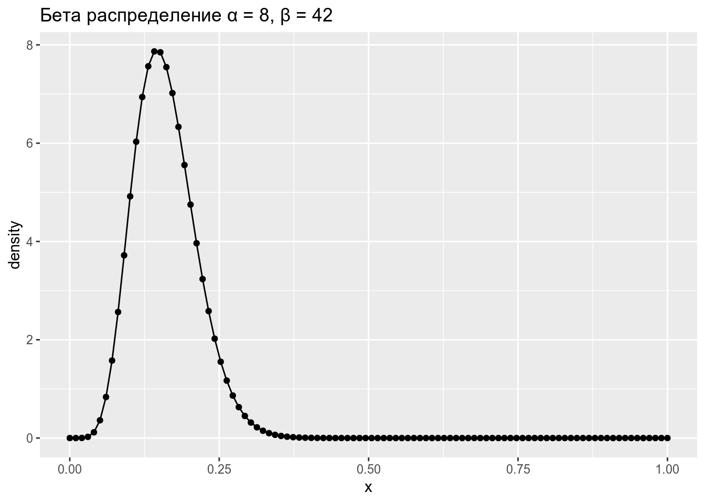
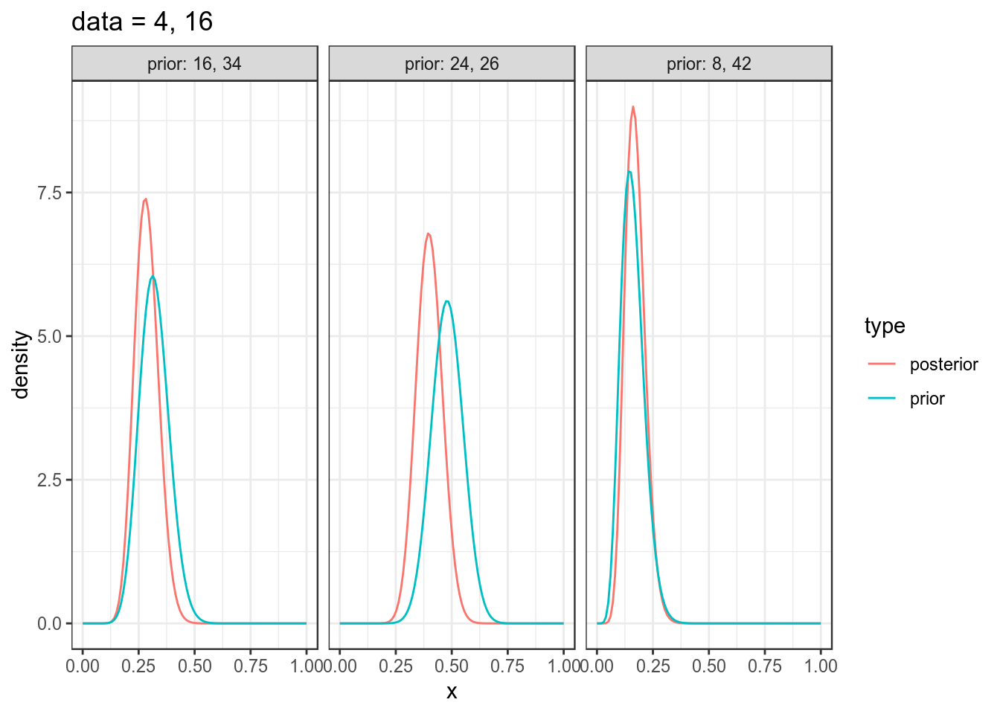

library(tidyverse)
theme_set(theme_bw())В байесовском подоходе статистический вывод описывается формулой Байеса
\[P(θ|Data) = \frac{P(Data|θ)\times P(θ)}{P(Data)}\]
В литературе можно еще встретить такую запись:
\[P(θ|Data) \propto P(Data|θ)\times P(θ)\]
Биномиальные данные возникают, когда нас интересует доля успехов в какой-то серии эксперементов Бернулли.
Биномиальное распределение — распределение количества успехов эксперементов Бернулли из n попыток с вероятностью успеха p.
\[P(k | n, p) = \frac{n!}{k!(n-k)!} \times p^k \times (1-p)^{n-k} = {n \choose k} \times p^k \times (1-p)^{n-k}\] \[ 0 \leq p \leq 1; n, k > 0\]
data_frame(x = 0:50,
density = dbinom(x = x, size = 50, prob = 0.16)) %>%
ggplot(aes(x, density))+
geom_point()+
geom_line()+
labs(title = "Биномиальное распределение p = 0.16, n = 50")
\[P(x; α, β) = \frac{x^{α-1}\times (1-x)^{β-1}}{B(α, β)}; 0 \leq x \leq 1; α, β > 0\]
Бета функция:
\[Β(α, β) = \frac{Γ(α)\times Γ(β)}{Γ(α+β)} = \frac{(α-1)!(β-1)!}{(α+β-1)!} \]
data_frame(x = seq(0, 1, length.out = 100),
density = dbeta(x = x, shape1 = 8, shape2 = 42)) %>%
ggplot(aes(x, density))+
geom_point()+
geom_line()+
labs(title = "Бета распределение α = 8, β = 42")
Можно поиграть с разными параметрами:
shiny::runGitHub("agricolamz/beta_distribution_shiny") \[\mu = \frac{\alpha}{\alpha+\beta}\]
\[\sigma^2 = \frac{\alpha\times\beta}{(\alpha+\beta)^2\times(\alpha+\beta+1)}\]
\[Beta_{post}(\alpha_{post}, \beta_{post}) = Beta(\alpha_{prior}+\alpha_{data}, \beta_{prior}+\beta_{data}),\] где \(Beta\) — это бета распределение
shiny::runGitHub("agricolamz/bayes_for_binomial_app") data_frame(x = rep(seq(0, 1, length.out = 100), 6),
density = c(dbeta(unique(x), shape1 = 8, shape2 = 42),
dbeta(unique(x), shape1 = 16, shape2 = 34),
dbeta(unique(x), shape1 = 24, shape2 = 26),
dbeta(unique(x), shape1 = 8+4, shape2 = 42+16),
dbeta(unique(x), shape1 = 16+4, shape2 = 34+16),
dbeta(unique(x), shape1 = 24+4, shape2 = 26+16)),
type = rep(c("prior", "prior", "prior", "posterior", "posterior", "posterior"), each = 100),
dataset = rep(c("prior: 8, 42", "prior: 16, 34", "prior: 24, 26",
"prior: 8, 42", "prior: 16, 34", "prior: 24, 26"), each = 100)) %>%
ggplot(aes(x, density, color = type))+
geom_line()+
facet_wrap(~dataset)+
labs(title = "data = 4, 16")
Проведите байесовский апдейт \(Beta(42, 23)\) при помощи данных \(Beta(33, 22)\). Приведите
а) Какая доля от всех данных апостериорного распределения лежит в промежутке от 0.6 до 0.8? Ответ округлите до 2 знаков после запятой.
б) Какое значение вероятности соответствует 40-ой квантили апостериорного распределения? Ответ округлите до 2 знаков после запятой.
В базе данных Phoible, в которой собраны фонологические инвентари в языках мира. В датасет записано три переменных:
Посчитайте долю, которую составляет согласные от всего фонологического набора каждого языка и укажите название языка, в котором эта доля максимальна.
Проведите байесовский апдейт наблюдений каждого языка, используя в качестве априорного распределения бета распределение с параметрами α = 9.300246, и β = 4.4545. Посчитайте модуль разницы между апостериорной и изначальной долями согласных, представленных в данных. В ответе укажите язык с наибольшей разницей.